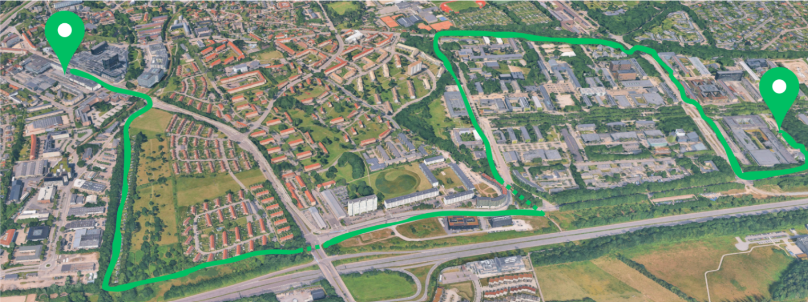

Rutebeskrivelse
Ruten er en 5 km hvor alle kan være med. Start er ved DTU bygning 101 og med mål i centrum af Lyngby! Begge med letbanestationer lige op af. Letbanen er gratis denne dagen og kører hvert femte minut. Brug denne mulighed efter løbet til at få din første tur, hvis du fx skal tilbage til start og hente din cykel eller bil. På hver station vil der også denne dag være aktiviteter man kan stå af og opleve. Se mere om dette her:
- Start: DTU's parkeringsplads bagved bygning 101
- Mål: Centrum af Lyngby ved Johannes Fogs Plads
- Distance: 5 km
